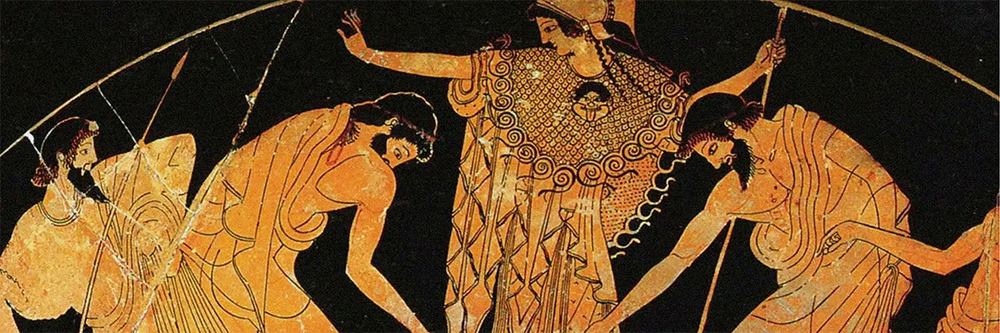

Human Creativity
Creative expression is fundamentally human.

People. Creativity. A More Human Future.
HumanMade was created to support artists, designers, photographers, writers, filmmakers, musicians, and other creative professionals navigating rapid technological change.
We believe technology can be a powerful tool when used responsibly, but human creativity remains essential to culture, storytelling, innovation, and meaningful work.
While our primary focus is creative professions, many of the challenges explored on this site reflect broader questions about the future of work, responsible AI adoption, and preserving opportunities for people whose careers depend on expertise, judgment, relationships, and original thinking.
To help creative professionals understand and respond constructively to technological change while promoting fair opportunities, ethical innovation, transparency, creator rights, and meaningful human work.
HumanMade seeks to educate, advocate, and encourage responsible conversations about how technology should support people rather than diminish human creativity.
Creative expression is fundamentally human.
Workers deserve access to information, training, and support during periods of technological change.
Technology should strengthen human potential rather than replace it.
Strong communities help creators adapt, learn, and thrive.
Curated resources, practical guidance, and educational tools that help creative professionals navigate change.
Accessible information about AI, creative rights, ethical implementation, and future-of-work issues.
Promoting transparency, responsible implementation, and policies that value meaningful human work.
AI can automate certain tasks, but human creativity, storytelling, judgment, collaboration, and lived experience remain valuable and difficult to replicate.
Copyright laws continue to evolve. Current legal guidance varies by jurisdiction, making it important for creators to stay informed and seek professional advice when necessary.
Yes. Responsible implementation includes transparency, human oversight, fair attribution, workforce training, and respect for creator rights.
Continuous learning, networking, portfolio development, adaptable skills, and understanding emerging technologies can help creators thrive.
Interested in advocacy, education, ethical AI, or protecting meaningful human creativity? HumanMade encourages individuals and organizations to participate in conversations shaping the future of work.
Explore educational resources and research.
Explore Resources →Understand creator protections and advocacy.
Learn More →Learn about responsible implementation practices.
Learn More →Together, we can promote ethical AI, strengthen creative careers, and preserve meaningful human work.
Get Started